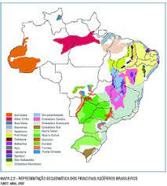

Solução-2
A abertura de poços artesianos na região

A imagem acima diz respeito a um mapa de aquíferos presentes no nosso país, e como podemos ver, muitos desses aquíferos estão presentes na nossa região (extremo oeste Bahiano).
E como funciona esse processo?
O poço artesiano capta água de reservas mais profundas (Aquíferos) e pode ser jorrante ou não. Além disso, pode precisar de bomba ou não. Por estarem em regiões mais profundas não necessita de filtros. Também é um poço tubular e sua profundidade pode variar de 50 a 2000 metros.